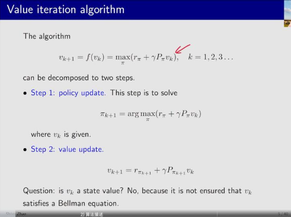
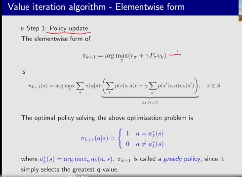
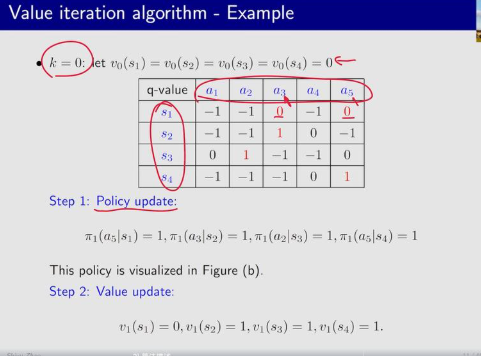
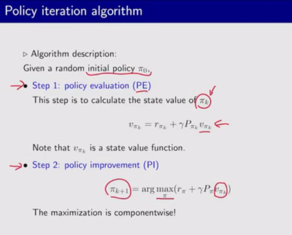
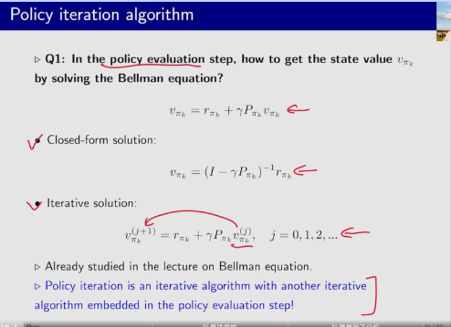
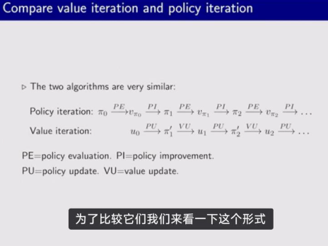
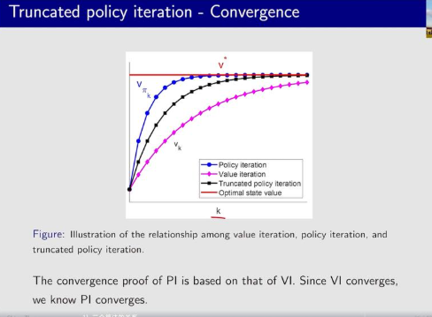

强化学习学习笔记（四）值迭代和策略迭代
一、值迭代算法
如何求解贝尔曼等式？在上一章中，已经知道了求解贝尔曼公式核心是求解一个f(v)=v的不动点问题，通过contraction mapping
定理可知，可以使用迭代的方式求解。

贝尔曼公式中蕴含着π，π和v是绑定的。因此，需要通过两个步骤去求解。
第一步【优化策略（policy update）】:是在给定vk的情况下求解πk+1
第二步【优化值（value update）】:是把πk+1带入值的公式，得到rπk+1和pπk+1（这俩是世界模型决定，和π相关），从而去更新v

因为现在是vk迭代vk+1的方式得到最后的v，所以还要补充收敛性证明：
||vk+1-vk||＜delta的时候视为收敛，迭代结束。
理论上分析常用矩阵形式，但是实际实现上会用元素形式去实现（迭代的方式）
第一步是更新策略，目的是求解最优的π，最优的π可以通过贪婪算法得到：在每一步都选取使得q值最大的a，这个动作的概率赋值为1，其他动作的概率赋值为0。这个策略是确定性的策略

第二步是值迭代，对于每个s都可以求解出q，把π还可以代进来，对应的q最大的值概率是1，其他的概率是0。

上面的过程可以写成伪代码：

首先我们有一个vk，在vk还没收敛的时候，就通过不断的迭代，遍历所有的状态s，遍历所有状态的a，计算所有状态的qk，看哪个action对应的是最大的qk，选这个action。并且根据这种方式去更新value（已知π的情况下就可以知道r，可以迭代。）
举例说明：在这个案例中，一开始vk是一个随机的策略（图b），然后知道了每个状态的。然后从v得到每个q

假设初始状态，令v0＝0，然后得到状态，就可以得到每个policy的权重
第一步迭代完，已经可以知道s2，s3，s4的策略是最优的，但是s1的策略还没更新。
然后进行下一步迭代，把当前的v作为最新的v，得到新的值。

这一步之后，把s1的最优值也更新了。

二、策略迭代算法
算法描述：给定一个π0
第一步，进行策略估计获得更好的值。
第二步，用这个值去更新更新策略。



和策略迭代相关的问题 问题1，如何求解：和之前一样的两种方法，求逆和迭代。用迭代的方式去求解这个贝尔曼公式
问题2，为什么得到的πk+1一定比πk好？因为πk+1具有更高的值（可以证明vπk+1≥vπk）
问题3 为什么迭代可以得到最优策略？在迭代过程中，策略会改进，一步又一步收敛到最优的值，这时候模型就可以收敛到最优策略。
问题4 策略迭代和值迭代算法有什么关系？
①证明策略是收敛的需要用到值迭代是收敛的的定理
②策略迭代和值迭代实际上是两个极端，值迭代是相同的v下找最优策略，策略迭代是在一个给定的策略下找最优的v
算法的实施
还是通过迭代的方法

值迭代和策略迭代的关系：
策略迭代先从策略开始，先给策略估值，再算价值更新策略
值迭代先从值开始，更新策略，得到策略，再更新值，再循环
两个步骤其实就是翻一下

这张图展示了两个算法的差异：

最重要的区别就在于在迭代的第四步，值迭代算法用的是v1，策略迭代算法：用的是vπ1，而vπ1又需要在π1下基于v0进行无穷多次迭代才能得到，收敛时才退出。作为对比，值迭代算法就迭代一次，直接得到下一时刻的v。说明值迭代算法只迭代1次，策略迭代算法要迭代很多次，我们由此可以想到，有没有一种迭代方法能在这两者之间进行一个折中的，所以就提出了截断策略迭代算法。

三、截断策略迭代算法：
截断策略迭代算法是值迭代算法和策略迭代算法的一般化的推广，值迭代只进行1步迭代，值迭代进行有限步的迭代就是截断策略迭代，如果进行很多步，直到算法收敛（价值准确估计出来），这个就是策略迭代算法。
算法的实施 一样，还是通过迭代的方法，只是中间迭代一定的步数。

收敛性上来看，迭代k步，策略迭代算法最先收敛到最优策略，因为他的价值函数每次都要迭代很多次，以达到当前的最优。值迭代最慢，因为他每次只迭代1次策略。截断策略迭代介于二者之间。
